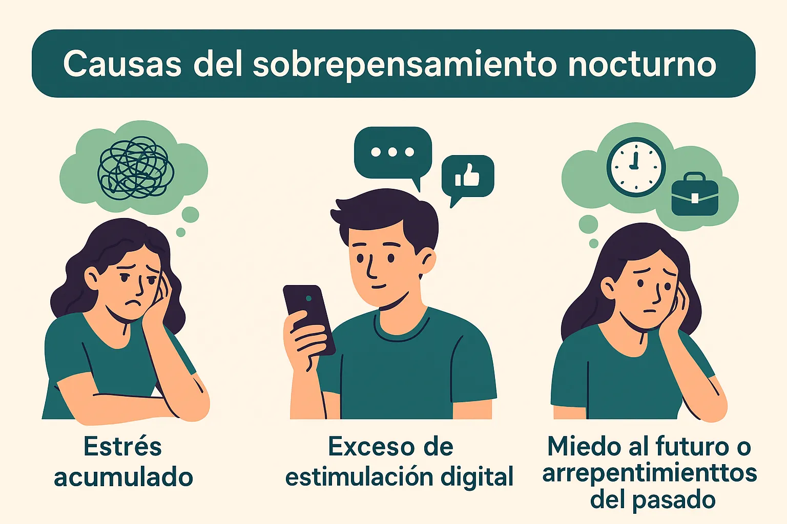
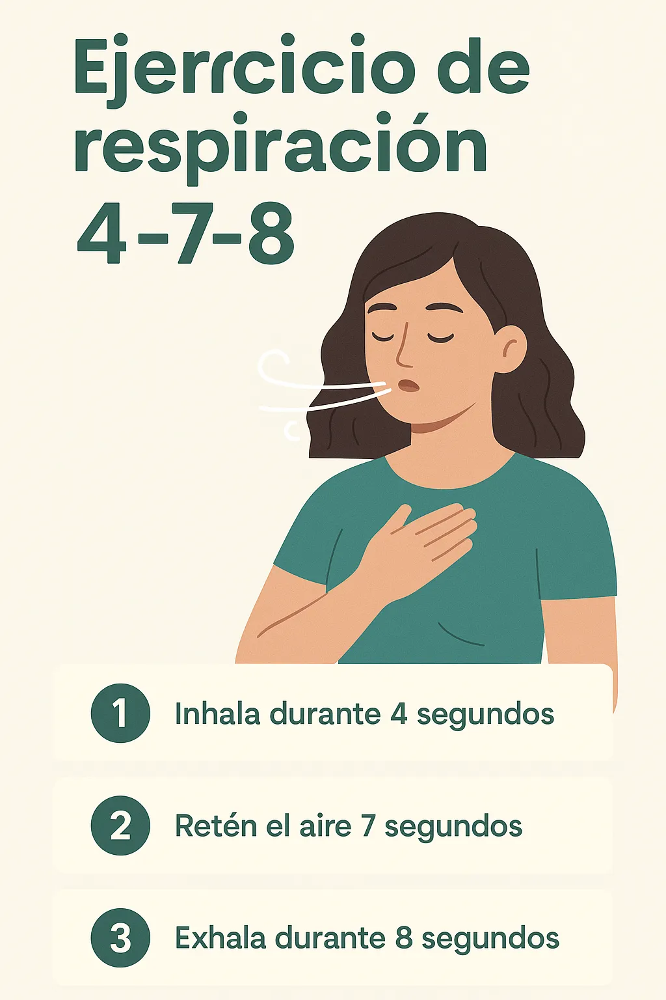
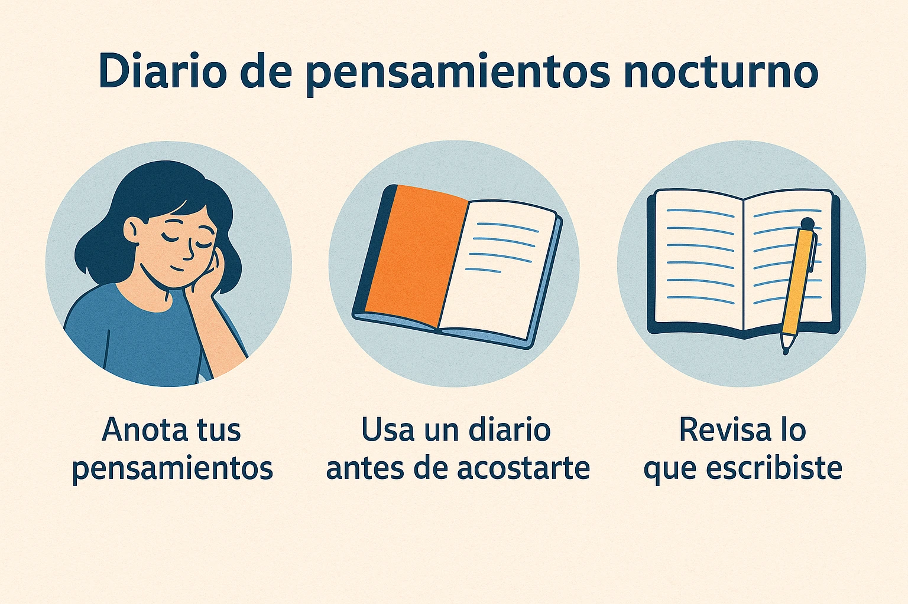

Cómo dejar de sobrepensar antes de dormir: Guía Práctica y Rutina Nocturna
Introducción: El peso de la mente inquieta
¿Te ha pasado que apagas la luz, cierras los ojos… y de pronto tu mente enciende un torbellino de pensamientos? Millones de personas sufren este fenómeno: sobrepensar antes de dormir es una de las principales causas de insomnio y ansiedad nocturna. Las estadísticas revelan que más del 60% de adultos tiene dificultades para “apagar” la mente después de un día cargado de estímulos digitales, preocupaciones laborales y tareas familiares.
Pero no todo está perdido. Con técnicas prácticas, hábitos bien construidos y un entorno relajante, puedes recuperar noches tranquilas y dormir profundamente. En esta guía completa te comparto todo lo que necesitas para lograrlo.
¿Qué provoca el sobrepensamiento nocturno?
Estrés acumulado
El cuerpo se relaja, pero la mente sigue procesando pendientes, discusiones o decisiones importantes. El estrés laboral y personal es el disparador número uno del bucle de pensamientos.
Exceso de estimulación digital
El uso prolongado de móviles, redes sociales y series antes de dormir estimula áreas del cerebro que deberían estar calmadas. La luz azul retrasa la liberación de melatonina, la hormona del sueño.
Miedo al futuro o arrepentimientos del pasado
Revisar errores, conversaciones incómodas o imaginar escenarios negativos activa la ansiedad nocturna. El cerebro interpreta amenazas que no existen en ese momento.
Consecuencias reales en la salud
Sobrepensar cada noche afecta mucho más que tus horas de sueño. Puede derivar en insomnio crónico, alteraciones del sistema inmune, fatiga constante, cambios de humor e incluso desequilibrios hormonales. Dormir mal compromete la concentración, la memoria y tu capacidad de resolver problemas de forma creativa.
Técnicas prácticas para dejar de sobrepensar antes de dormir
1️⃣ Respiración profunda 4-7-8
Una de las técnicas más efectivas: inhala 4 segundos, retén el aire 7 segundos y exhala en 8. Repite 5 a 10 veces, concentrándote solo en la cuenta. Es ideal para calmar la mente rápidamente.
2️⃣ Meditación guiada y mindfulness
Prueba audios de meditación antes de dormir. El mindfulness te entrena para observar pensamientos sin atraparte en ellos. Puedes combinarlo con tu Guía Completa de Meditación.
3️⃣ Diario de pensamientos
Dedica 5 minutos a escribir tus preocupaciones y tareas pendientes. Al plasmarlas en papel, tu mente entiende que ya no necesita repetirlas en bucle.
4️⃣ Lectura ligera o música relajante
Opta por libros sencillos, cuentos o audiolibros de voz calmada. Acompaña con música instrumental suave para inducir sueño.
Tabla comparativa de técnicas
| Técnica | Tiempo recomendado | Beneficio principal |
|---|---|---|
| Respiración 4-7-8 | 5-10 min | Reduce frecuencia cardíaca y relaja mente |
| Meditación guiada | 10-20 min | Observa pensamientos sin engancharse |
| Diario nocturno | 5 min | Libera la carga mental acumulada |
| Lectura/Música | 15 min | Desconecta de pantallas y estimula calma |
Rutina nocturna paso a paso
- Desconecta pantallas al menos 30 minutos antes de acostarte.
- Ducha tibia o baño relajante.
- Prepara tu habitación: luz tenue, temperatura fresca, cortinas cerradas.
- Realiza respiración profunda en la cama.
- Escribe 3 cosas positivas del día en tu diario.
- Lee unas páginas o escucha música suave.
- Prueba meditación guiada si la mente sigue activa.
Errores comunes y cómo evitarlos
- Usar el móvil justo antes de dormir.
- Intentar forzar el sueño pensando “debo dormir ya”.
- Beber café o alcohol por la noche.
- No mantener horarios fijos de sueño.
Preguntas frecuentes
¿Qué es el sobrepensamiento nocturno? Un patrón de pensamientos repetitivos que impide conciliar el sueño.
¿Qué técnica es la más rápida? La respiración 4-7-8 calma en pocos minutos.
¿Qué hago si me despierto con la mente activa? Levántate, bebe agua, camina unos minutos y vuelve cuando sientas sueño.
¿Sirve el mindfulness? Sí, ayuda a observar pensamientos sin engancharse.
¿Cuánto tiempo toma ver resultados? Con práctica diaria, mejoras desde la primera semana.
¿Dónde encuentro más recursos? Explora nuestra Guía de Mindfulness Diario y Técnicas de Respiración.
Conclusión
Dejar de sobrepensar antes de dormir es un proceso. Requiere práctica, constancia y autocompasión. Pon en marcha estas técnicas y observa cómo tus noches se vuelven más tranquilas, reparadoras y felices.
Explora también nuestra Guía de Meditación y empieza hoy mismo tu viaje hacia un sueño reparador.